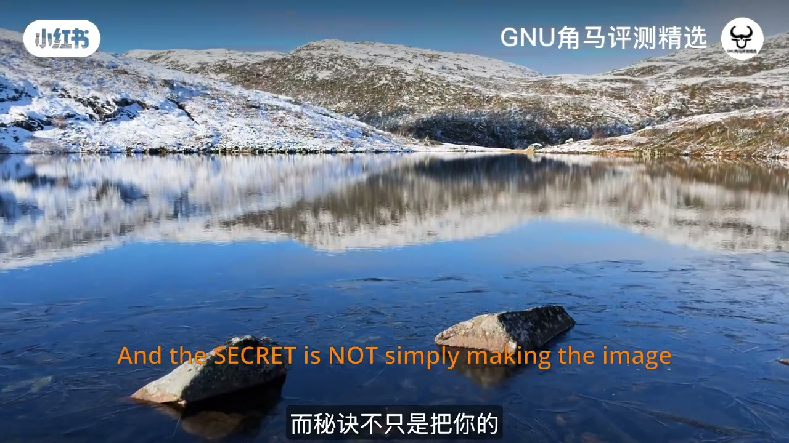
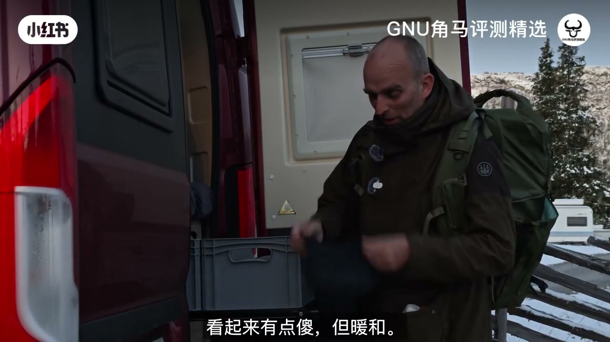
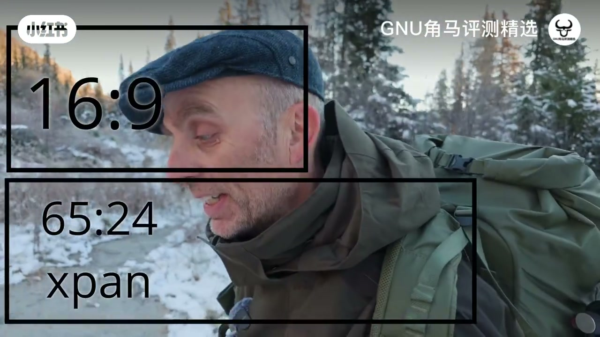
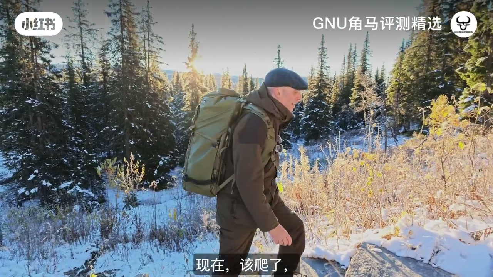
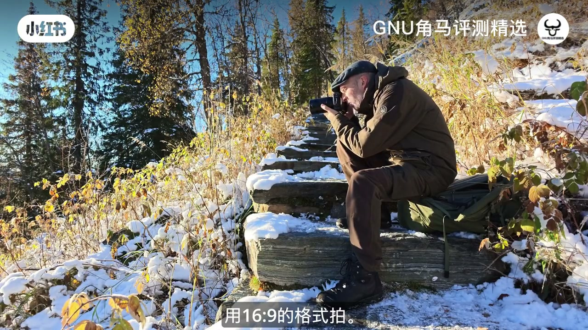
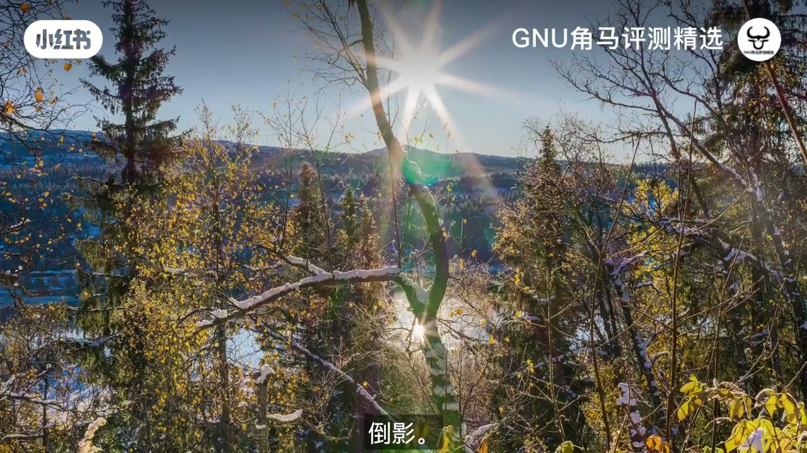
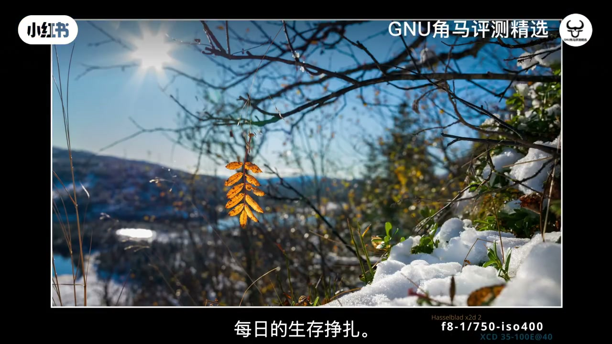
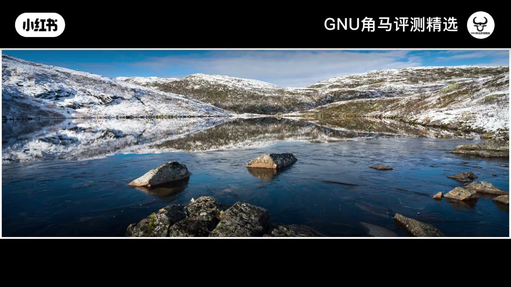
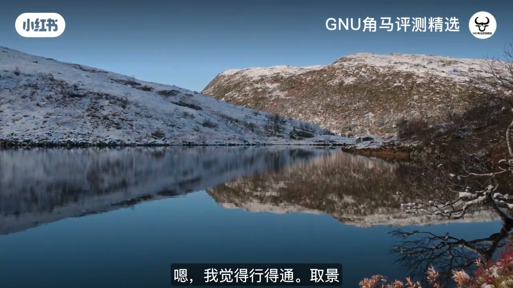

内容要点
小红书「GNU角马评测精选」精选一支英文风光 vlog：挪威初雪覆盖秋叶的清晨，作者背哈苏走上夏尔巴石阶，边走边讲——他爱全景，不是因为「更宽更好看」，而是宽幅会裁掉过多天空与前景，把注意力压到中间那条内容线。片中对比 16:9 / X-Pan（约65:24）与常规 4:3·3:2，演示小光圈太阳星芒与大光圈虚化，并提醒全景并非万能。口播为英文，Whisper 大量错译；叙述以画面字幕与笔记文案为准。
知识结构
秘诀不只是拍得更宽，而是知道如何裁切；约5℃露营后出门。
全景裁短天空/前景，聚焦中央；偏爱 X-Pan 与 16:9，机内比例后期可改。
石阶约千级，只走不硬扛；路过雪人「当地艺术」。
16:9 留前景树；F19/F22 出太阳星芒，湖倒影与秋叶需取舍。
同一冰霜秋叶：大光圈 bokeh vs 小光圈星芒，问观众偏好。
夏尔巴手工石阶旁白；全景收束秋冬过渡色带。
65:24 压到中间窄线；水天过多时宽幅比常规画幅更有趣。
20–35mm 主力；鹿群偶遇与前景框景；重申全景首选。
全景是构图工具：用比例强迫自己砍掉多余天空与前景，把故事放在中间窄带；星芒与虚化是表达选择，不是参数信仰；广角常规画幅在需要更多环境上下文时仍更合适。
00:00–01:30命题：更有趣的风光，先改「怎么裁世界」
视频用一片雪山倒映湖面开场。橙色英文字幕先抛命题：让风光更有趣的方法，是改变你描述世界的方式；秘诀不只是把照片拍得更宽，而是知道该如何「离开」——后文会落实为画幅裁切与构图取舍。
镜头切到约5℃的清晨：作者从红褐色露营车后门整理大包，戴上保暖耳帽（他自嘲「看起来有点蠢」）。今天的任务写得很明确——带哈苏出门拍全景，趁初雪还没完全盖住秋色。


01:30–03:10为什么爱全景：裁短天空与前景，盯住中间
上路后他开始讲「全景有什么特别」。相对常见的 4:3 或 3:2，宽幅会把天空裁短、把前景也裁短，注意力被压到画面中央那条横带——作者认为对风光这往往很关键，并给出「更广阔的观感」。
器材偏好落在哈苏：机背特写时字幕提到经典 16:9；口播里他还点名 Hasselblad X-Pan，以及一般相机里可选的宽画幅。实用细节：机内选好比例后，后期软件会按该画幅打开；若事后反悔，也可以改回原始比例，不必担心「选错就毁档」。

03:10–04:20石阶开练：只走、不硬扛一千级
转场上山。他说今天要走上这些台阶——旁白里出现「大约一千多级」、多层石头，但策略是「选简单的」：只走路，不做额外体能挑战。路上遇见一个雪人，他笑称这是「相当不常见的当地艺术」。
石阶积雪湿滑。他停下来取出相机包，准备拍仍可见的秋冬色彩：树叶已结冰、背后有雪。画面里他背着大包沿石阶向上，蓝天疏林，节奏从「讲画幅」切到「边走边拍」。

04:20–06:00湖边实拍：16:9 留前景，F19/F22 换星芒
到了能看见小湖与阳光反射的位置，他蹲下来取景。字幕说「这不是最宽的全景」——因为想保留面前的树，所以不用最极端的窄高裁切，而选 16:9。倒影与秋叶可能「太抢」，可选侧移一步让画面更冷静。
光圈被收到大约 F19 或 F22：透过树隙，太阳拉出清晰星芒，湖面倒影在枝叶间闪动。作者承认高光与倒影可能过强，但仍想试试这种「收小光圈换星芒」的表达。


06:00–07:40同一片冰霜秋叶：虚化，还是星芒？
他把注意力转到一片带「冷冰淇淋」质感的秋叶上。两条路线摆出来：开大光圈，叶子从背景跳出来，焦外虚化讨喜；或者继续收到 F22，追求星芒，同时接受景深变深、背景更「实」、光线可能更刺。
演示里出现大光圈下糊成光斑的秋叶画面，字幕写「喜欢这种效果的人会爱」。他直接问观众：你更喜欢 bokeh，还是 starburst（星芒）？这是表达偏好题，不是「哪张更正确」。
07:40–09:40夏尔巴石阶，与秋叶最后一支舞
旁白插入石阶来历：由尼泊尔夏尔巴人花费大量工时手工铺砌，让登山更安全、也减少对山体的随意踩踏损坏——作者把它说成「人生中很棒的一件事」。随后他被风中摇晃的秋叶吸引，拍下秋冬交替的短暂瞬间。
继续上行时，开阔雪坡与远山入画。他再次强调全景形状：可以把颜色与主体收在窄带里，减少「剩下的杂叶」抢戏。这段把「画幅」从菜单选项，落到行走中的取景习惯。

09:40–12:00X-Pan 对比：水天太多时，宽幅更有趣
湖中两块石头成了实验对象。他先想象常规 4:3/3:2：水多、天多，主体比例被稀释。再切到约 65:24 的 X-Pan / 全景模式——画面上下被黑边裁掉，倒影与雪山压进中间那条窄线，字幕写「我发现这种画幅常常让构图更有趣」。
样片标注可见类似 PANORAMIC 与曝光信息。作者的判断很具体：当真正让照片成立的是中间那条元素线时，全景有用；若关键是大面积环境上下文，普通画幅反而更合适。片中也穿插鹿群掠过山坡——「如果幸运」才会遇见的加分瞬间。

12:00–13:45焦段边界：20–35mm，全景仍是首选
收束段谈镜头：这类风光他主要靠 20–35mm；有时 35–100mm 会显得太窄。湖边他蹲下来，用前景枝条框住雪坡与水面，检查「能不能把形状放进画面」。
最后他再次点题：Panoramic Mode 往往是他拍风光时最好的画幅选择——呼应开场「不是为了宽而宽，而是为了把世界说清楚」。观点均为作者现场体验，非普适定律。

详细文字转录
以下内容按 Whisper 原始分段完整呈现（已转简体），可能包含识别误差。本片口播为英文，ASR 专有名词错译较多；章节叙述已按画面字幕与笔记文案校正。
一种最好的方法让地图拍摄更有趣
就是改变你形容世界的方式
而秘密并不仅仅是让你的照片变得更广阔
而是知道该如何离开
早安
在露营场上过了一整晚
但我用了一个好的热炉
所以没什么问题
现在大概5度
的温度
所以冬天应该是在这里
但可能我还是会有那些
很棒的颜色
如果没有被雪挡
对,是不太好
所以我应该要戴我的耳机和耳机
看起来有点蠢,但保持温度
所以蛮不错的
把我的相机拿出来
今天我会拍摄摄像素摄影
因为我只是轻轻地拍摄它
这是我非常喜欢的
Hustle.com的主要原因
就是我可以拍摄
很广阔的摄影
首先我们要走一步
我知道这里有很棒的景色
所以我们要尝试拿出相机
拍摄一些照片
这是今天的任务
所以我们开始吧
今天早上很美丽
第一天
第一次雪下的季节
冬天的颜色
只是被遮盖了
一层淡淡的雪
让我感到很美丽
一章快要结束了
新的一章快要开始
可能我会很幸运
拍摄这短暂的途径
让冬天的震动颜色
仍然争斗著
在冬天完全结束
一点都不知道
什么情况会发生
拍摄摄影的特别之处
我认为
有点不一样
跟一般的4x3
或是3x2的形式
你会得到很长的线条
你会在天空上剪裁
然后在前面剪裁
所以你会集中在中央
中央的画面
有时候是很重要的
它会给你很广阔的看法
我非常喜欢
我的Hasselblad相机
可能是不同的相机
但它有很广阔的看法
和16x9的看法
我认为最多的摄像头设定
是我最喜欢的
但今天我们会试用两款
在很多相机
你可以选择
你想拍摄的角度
个人来说
我比较喜欢Hasselblad X-Pan
或是一般的16x9的
广阔的画面
所以这是我刚才拍摄的
Panoramic的镜头
最好的地方是
当你把相机的角度
选择在你的相机上
然后把画面打开
在你的编辑软件上
它会打开正确的样子
但你也可以把相机的
角度变回原来的角度
所以如果你稍后改变了
就不用担心了
这是今天的任务
我们会尝试走上这座摄像头
建造在摄像头上
大约一千二十步
和几层石头
很多工作
但我们会选择简单的
我们不会做任何工作
我们只会走路
在走路中
我遇到一个相当不常见的
当地艺术品
一位雪人
接下来的步骤
有很多故事在背后
但更多在后面
现在是时候爬山了
让大家知道
这些步骤是比较好的
现在是时候把相机拿出来
我会用我的相机包
不想坐在这里
不想坐在这层隙上
很滑的楼梯
不过我会用相机
拍摄这个美丽的景色
现在的好处是
你还可以看到秋冬的色彩
就像这棵树
但它是冰的
背后有雪
最好的地方是
这张相机有两次的阳光
因为那里有个小湖
阳光会在湖上反射
可能会有点困扰
可能会有点太多
但我们来试试看
在这张相机
我会拍摄16x9的形状
这不是最广阔的景色
但我认为是不错的
因为我想拍摄在前面一点
所以我不会用最窄的景色
因为我想拍摄这棵树
在前面
我们来试试看
我会把相机放下
我会把相机放下
我会把相机放下
我会把相机放到F19
或是F22
这里我们看到
阳光和水的反射
在背后
阳光也让那些
黄色秋冬的叶子
非常出色
可能有点困扰
但个人来说
我喜欢
另一种选择
就是把那些秋冬的叶子
直接往左边一步
让相机看起来
比较冷静
在这张相机
我会专注在这个
美丽的秋冬的叶子
它有这个
很冷的冰淇淋
背景会看起来
蛮好看
但我有两种选择
我可以把它射得很开
那会让
这叶子的
亮度和其他背景
变得很明显
像是在展示一些
很美丽的图片
但如果我想把它放下
例如F22
或F27
我会再用星巴斯
但另一方面
它会让相机变得很亮
可能会失去那种
我们会用两种选择
看看哪个最好
我会用最广阔的
拍摄方式
用广阔的拍摄方式
我们可以把叶子
放在一旁
让它只留在焦点
我们还可以用
一点点的镜头
对,看起来蛮好看
如果我把它放下
如果我放到
F22
我会把它关掉
如果我只要
把叶子放在阳光背景
可能会有星巴斯
让我们看看
放下焦点
会给我们更深入的感觉
但也会让相机
变得更明显
另一方面
我们可以用两种星巴斯
而不是Bokeh
你最喜欢Bokeh还是星巴斯
unda
unda
unda
unda
уди
我想想
我正豁使
的家庭
星巴斯
地面
楼梯是索尔巴斯从尼泊尔建成的
他们花了千多个小时
小心地把每个石头都放在手上
石头被飞机射入了
石头步道让爬山更容易
并且帮助在山上制造损坏和损毁
这就是人生中最棒的一件事
我刚才找到这棵
很棒的树叶掉下了
我被那棵树叶吸引了
它在摇晃著
我只能拍几张照片
这是我在自然生活中的一段生活
日常生活的争执
一棵秋叶子在生命结束后
在风中跳出最后一支舞
直到最后都被一根树叶剥掉
每一步都让我越来越近
在这棵树叶的顶峰
虽然我有点不呼吸
但我仍然享受这美丽的摇晃
在秋冬和冬天之间
是这些转变的瞬间
让人生中有真正的相互反应
这里我再次开拍
让颜色变淡了
我专注在顶峰上
在这棵树叶拍摄
在这个形状拍摄
可以让我美丽地
拍摄这些美丽的颜色
并不让剩下的树叶
走进去
这张照片
可以看到
拍摄在正常模式
4x3或3x2
或是拍摄在摄影模式
我看到这两块石头
在水中
有很好的背景
我看到这两块石头
在水中
有很好的背景
我看到这两块石头
在水中
有很好的背景
有很好的背景
特别是现在
那边的灯光
白雪和蓝色天空
如果拍摄在正常模式
会看起来很美丽
但同时
我会感受到这张照片
我会转换到
这张65x24的X-Pan模式
会看起来有点不一样
我专注在这张照片上
这两块石头在水中
我发现这模式
经常让构图变得更有趣
特别是在景观上
因为它让我专注在
真正让照片运作的元素
特别是那条中间的窄线
如果拍摄在没有这两块石头
更重要的是
拍摄在正常模式上
因为太多水了
太多天空了
主要的目的
就是那美丽的影响
那些雪山在那里
我猜这张照片
看起来有点纯真
当你看到那些反射
会觉得很美丽
这不是单纯艺术的美丽
在山上的景观
如果幸运的话
你也许会遇到
那些乡下的雨
让你感受到
那些雪山的美丽
如果幸运的话
你也许会遇到
那些乡下的雨
让你感受到
那些雪山的美丽
那些雪山的美丽
如果幸运的话
你也许会遇到
那些乡下的雨
让你感受到
那些雪山的美丽
那些雪山的美丽
如果幸运的话
你也许会遇到
那些乡下的雨
让你感受到
那些雪山的美丽
那些雪山的美丽
这个也是真正的
20-35mm的镜头
这就是拍摄镜头的主要目标
甚至35-100mm的镜头
有时候也会变得太窄了
镜头上也不会有太多镜头
现在我们把镜头放在一角
看看能不能把它放进去
不太确定
对 我觉得还可以
你现在可以看到镜头的形状
你能看到右边的白雪
你能看到镜头的形状
还有这些柜子
所以对 我觉得还可以
当然
Panoramic Mode
是最好的镜头拍摄镜头